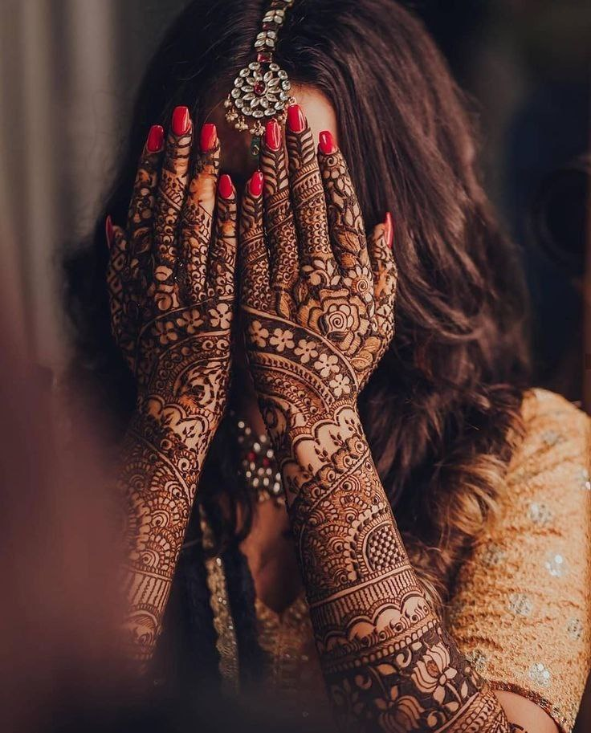
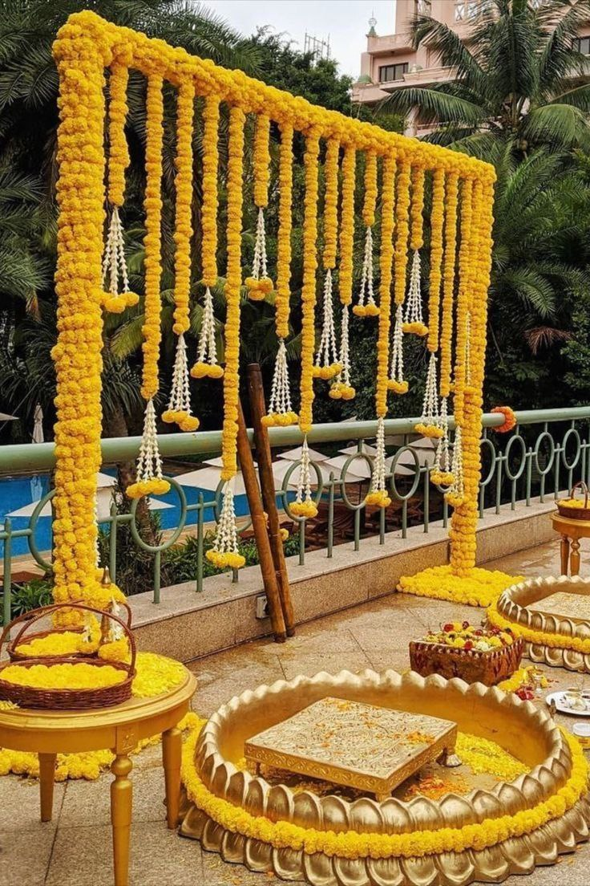

Itinerary
Monday 30th January 2023: Mehendi Ceremony
Mehendi ceremony is held a few days before the actual wedding as a way to get together with the bride and groom's close friends and family to celebrate an evening of songs, dances, food, games and the women having their hands donned with beautiful, intricate henna designs!
Outfit choices for women are a saree, lehenga or a salwar kameez. If you're planning on having some henna on your hands, make sure you pick something short sleeved. Men can wear a kurta or salwar kameez.
This is a bright and colourful start to the wedding.
Tuesday 31st January 2023: Sightseeing + Shopping Spree
The day after the Mehendi ceremony would be a day to rest, relax and explore the city of Aurangabad. You will have the day to yourself to go spice shopping, visit the Ellora Caves, the Daulatabad Fort, Soneri Mahal or Bibi Ka Maqbara (the mini Taj). You can also choose to stay in and experience a taste of a very special part of the Indian cuisine, the Royal Thali, at Singhavi's. You can go shopping for some Indian outfits or keepsakes!
Wednesday 1st February 2023: Haldi Ceremony & Sangeet
The Haldi ceremony is a ritual holy bath that is a significant part of Indian traditions. The ceremony takes place a day before the wedding. Set in all shades of yellow and with marigold flowers everywhere in sight, Haldi (turmeric) paste is applied to the bride and groom by their loved ones as a blessing of prosperity as they are about to start their lives together.
Yellow is the most preferred colour for attending a Haldi ceremony. Make sure it's an outfit that's easy for you to move around in!
The second half of the day would be set aside for Sangeet! We hope you're ready to put your dancing shoes on and bop to the beat of Indian music!
Sangeet is a night to dance. Typically, both the bride's and the groom's family and their friends would prepare choreographed dances to perform on the night of Sangeet. The night is to relish in happiness and joy surrounding the couple. It's a time to let your hand down before the wedding day, have delicious food and celebrate. The performances would be followed by an open dance floor for everyone to join in.
As with the day of the Mehendi, you can wear a saree, lehenga or a salwar kameez for this event. Men have more flexibility here as they can also opt for semi-formal western style of clothing.
Thursday 2nd February 2023: Ceremony & Reception
A Buddhist wedding is an intimate, private ceremony in the presence of close family and friends where the bride and groom wear white and are wed with the blessings of a Buddhist monk. This is followed by reciting a hymn (vandana). The bride and groom put a garland of flowers around each other, the groom ties a mangalsutra (typically a gold necklace) around the bride's neck and the guests shower then with flowers (akshada) and/or coloured rice.
The ceremony is followed by greeting the newly wed couple on stage, sharing gifts and getting pictures taken. There will be a short break where the bride and groom would change into different outfits and join the guests again to continue meeting the guests. Indian weddings typically have a guest list of around 600 people, so the bride and groom spend the next few hours greeting guests while the ones who have already met them on stage can go ahead and enjoy the buffet for a lavish dinner. There's a series of wedding music throughout the day and everyone spends the evening mixing and mingling with other guests.
The bride and groom wear the colours white, red, and black on this day.
Women typically wear lehengas or sarees for a wedding/reception and men go for a stylish salwar kameez.